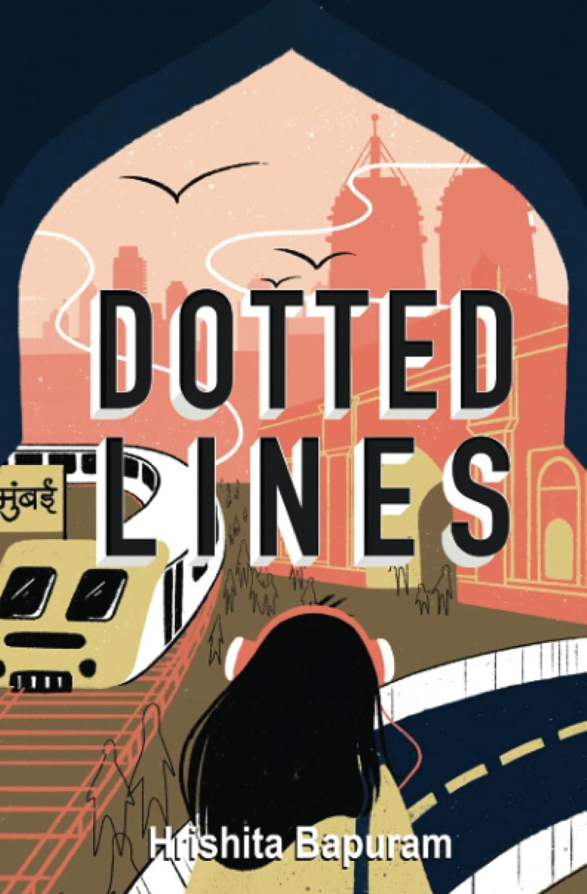

The trajectory
From a gold-medal statistics degree in Mumbai to production models in Dublin, in one consistent direction: closer to the decision. Full history on LinkedIn.
Data Scientist Inow
Cross-functional, production-level analytics, owned end to end, from feature engineering through to monitoring.
- Filtered Outbounding Model, a 6% lift in lead-to-sale conversion
- Customer segmentation, embedded in enterprise BI for senior leadership
- Extension & automation, across renewals and win-back, with automated retraining
Data & AI Champion
An internal remit alongside the day job: helping colleagues adopt AI tools in ways that hold up. Less evangelism than translation: showing teams where these tools earn their place, where they quietly don’t, and how to tell the difference before it reaches a customer.
Data Science Research Intern
Optimised over 100 independent spectrometry factors and built a model predicting haemoglobin levels from reflected light. Machine learning without a needle in sight.
Research & Analysis Intern
Evaluated research and produced analysis linking air pollution to obesity prevalence across Indian states.
Data Analytics Intern
A study of the 2000, 2008 and 2020 economic meltdowns: key factors, global impact, disruptions, and the path forward. An early lesson in how much of finance is really just statistics under pressure.
MSc Data & Computational Science
Machine Learning and AI, Probability and Statistics, Bayesian Data Analysis, Optimization in ML. Awarded the 100% Global Excellence Scholarship.
BSc Applied Statistics & Analytics
Design of Experiments, Hypothesis Testing, Operations Research, Stochastic Methods, Financial Risk Analytics, Time Series and Forecasting.
CPQFRM: Quantitative Finance & Risk Management
Derivatives, portfolio theory and risk modelling. The financial grounding behind TARA.
Claude: 101, Agents, Skills & MCP Servers
The formal version of what Arc and TARA taught me the hard way: agent design, tool use, and building MCP servers that behave.
Winter School on Deep Learning
The theoretical backbone, from one of the most respected statistical institutions in the world.
SAS Certified Specialist: Visual Business Analytics
Enterprise-grade visual analytics certification.
HarvardX Data Science
Where the journey from statistics into data science formally began.
Journey of AI to ChatGPT
How the separate moving parts of the field converged into one product, and what a transformer, an encoder and an attention head actually do, explained plainly rather than hand-waved. Watch the session ↗
Artificial Intelligence Educator
Taught ML and AI fundamentals through Python projects, and mentored students into the Microsoft Imagine Cup Junior Hackathon. Teaching it is the best test of knowing it.
100% Global Excellence Scholarship
Full tuition waiver at UCD, awarded for consistent academic excellence among non-EU students, 2022–23.
Gold Medallist, NMIMS
1st rank across all campuses, BSc Applied Statistics & Analytics, graduating class of 2022.
Published Author: Dotted Lines
Wrote and published a book with New Degree Press as a PEP Fellow at the Creators Institute.
2nd Runner-Up, CGI C.H.A.N.G.E. '21
3rd of 105 teams nationwide at SRCC, New Delhi, for original solutions to curb local air pollution.
Machine learning & AI
Shipped models with real money on the line, and currently retraining myself for the generative era. The tools I’m living in are under keeping up.
Filtered Outbounding Model
6% lift in lead-to-sale conversion
Predictive models using causal inference and A/B testing to forecast engagement propensity and optimise call-centre contact strategy. Owned the full pipeline: source identification, feature engineering, back-testing, deployment, monitoring. 6% lift in lead-to-sale conversion on new business. The result was persuasive enough that previously data-resistant call-centre teams asked to partner on campaign optimisation.
Customer Segmentation
demographics crossed with behaviour
Multi-dimensional segmentation blending demographic attributes with behavioural signals (email propensity, online acceptance likelihood) embedded in enterprise BI dashboards used by senior leadership for performance tracking and roadmap prioritisation.
Model Extension & Automation
renewals, win-back, automated retraining
Extended the framework to renewals and win-back through automated retraining pipelines, with a real-time dashboard tracking KPIs and model performance across campaigns.
Agentic systems
Agent design, MCP servers, and the unglamorous business of making them reliable. Learned by building; the two systems are under keeping up.
The theory underneath
Backprop, attention and optimisation derived by hand before they get imported. Slower than reaching for a library, and the only way the intuition sticks.
Keeping up
The field rewrites itself every few weeks, and reading about it stopped being enough somewhere around the second time I fell behind. So I build with it instead. Two systems I actually run. Both started as an excuse to learn something and then refused to stay a demo.
Arc
A personal operating system on the Claude API. Separate agents own tasks, calendar, fitness, meals and budget; a council layer above them reasons across all five and settles the competing priorities into one plan for the day.
It now runs my week, which is either a success metric or a warning.
TARA
MCP servers that expose verified domain knowledge (tax rules, portfolio optimisation, investment strategy) as something an AI tool can query rather than approximate.
Aimed at the problem I happen to live in: tax obligations across more than one residency, and assets that don’t care about borders.
And a steadily growing pile of small apps vibe-coded into existence at 11pm. Most of them work, and I can explain roughly half.
Selected projects
Statistics meeting the real world, mostly from before Arc and TARA. Code lives on github.com/hbapuram.
Stock prediction from Reddit sentiment
Scraped and scored Reddit comments on five US tech stocks, fused sentiment with price history, and predicted adjusted close with an LSTM.
Quantile regression across global exchanges
How much do six world indices move Nifty 50, and does the answer change in calm vs turbulent quantiles? It does.
Crypto portfolio optimization
Applying classical portfolio construction to a distinctly non-classical asset class.
Non-invasive haemoglobin prediction
PCA over 100+ spectrometry factors, then Random Forest vs SVM vs regression, predicting haemoglobin without drawing blood.
Dublin housing analysis
EDA and specialised class design in R for County Dublin's 2021 housing data. The city I now call home, as a dataset.
Air quality in Indian cities
AQI analysis that grew alongside research linking air pollution to health outcomes, and a hackathon podium at CGI C.H.A.N.G.E. '21.
Dotted Lines
The project with no loss function, written and published as a PEP Fellow at the Creators Institute.

Human in the loop
The part of the pipeline that doesn’t optimise for anything: books, cooking, photographs, tennis (below amateur, proudly) and respawning unlimited times in video games. No leaderboard for any of it. That’s the point.
on the shelfIf I had to keep one hobby, it’s this one.
Lifelong Agatha Christie devotee, unrepentant Potterhead, and a sucker for a puzzle: the kind with a solution at the end, and the kind without. Christie taught me to read suspiciously, to notice the detail a page spends slightly too long on, which is the same instinct as staring at a residual plot until it confesses.
click a cover for the note · no ratings, I’ve never found a number that says anything useful about a book. Five stars and a polite shrug look identical from the outside
sanskrit: still parsingLearnt it briefly in school. Trying to find my way back to it.
I did a few years of it as a child, forgot most of it, and only recently started again properly. The awkward part is not the grammar. It is that reaching for something this old somehow feels like it needs defending. The language gets treated as a relic or a position, rarely as what it actually is: a beautifully engineered thing you are allowed to simply enjoy learning. I would like to get to a point where enjoying it does not require a preamble.
मा कर्मफलहेतुर्भूर्मा ते सङ्गोऽस्त्वकर्मणि॥
mā karma-phala-hetur bhūr mā te saṅgo 'stv akarmaṇi
The work is yours; the results were never going to be. Don’t do it for the outcome, and don’t let that become a reason not to do it at all.
I reach for this one more than any other. It is less philosophy than scaffolding. Most weeks contain a lot I don’t control, like what lands, what stalls, whose priorities move on a Thursday, and the temptation is to tie how the week felt to how it turned out. This says don’t. Do the work actually in front of you and let the results be their own thing. It is the difference between a full week and a chaotic one, and it has held up better than any system I have tried to impose on top of it.
Right now I am taken apart by the Shiva Tandava Stotram. The structure, the rhythm, and how much meaning is packed into how little. Every other paper this year is about context efficiency; Sanskrit solved that a couple of millennia ago and made it scan.
the digital scrapbook, full archive on vsco.co/hrishitabapuram
In [∞]: hb.human.add_facet() still running. This section is permanently in development: there are more facets than fit here, and they arrive at the pace real life does.
Answers come from a short fact sheet about me, not from the open internet. Six questions a day, two sentences each. A party trick with a budget.